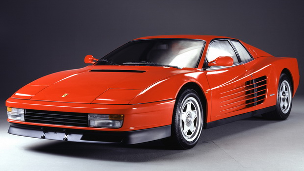

Witaj! Zapraszam Cię do rozwiązania quizu składającego się z 36 pytań.
Na rozwiązanie quizu masz 40 minut, po upływie tego czasu quiz zamyka się
Pytania ogólne
Pytanie 1
Jaki jest wynik działania 2+2*2?
6
8
-6
Pan Bóg tylko to wie
Pytanie 2
Kto jest najlepszym kierowcą F1?
Esteban Ocon
Nikita Mazepin
Lewis Hamilton
Max Verstappen
Pytanie 3
Jaką wódkę produkuje Palikot?
Soplica
Buh
Wyborową
Słowacki
Pytanie 4
Ile jest okrążeń podczas wyścigu na Monzy?
Pytanie 5
Z ilu liczb składa się numer telefonu?
Systemy operacyjne
Pytanie 6
Jak wyłączyć firewall w systemie linux?
systemctrl off firewall
sudo firewall disable
systemctrl stop ufw
sudo ufw disable
Pytanie 7
Jakie uprawnienia w systemie linux ustawimy jeżeli chcemy aby wszyscy mieli pełną kontrolę?
Pytanie 8
Jaki parametr jest potrzebny do usuniecia plików z potwierdzeniem?
Wybierz
-i
-G
-a
-l
co to parametr?
Pytanie 9
Jakim poleceniem dodajemy użytkowników w systemie linux?
wybierz
adduser
net user
aduser
moduser
usermod
Pytanie 10
Jak za pomocą jednej komendy użyć apt update i apt upgrade?
Pytanie 11
Jakim poleceniem sprawdzimy dysk w cmd?
df
fdisk -l
chkdsk
chkdskntfs
Pytanie 12
Jakie z podanych poleceń używamy w vim-ie?
:q
exit
:wq
a co to wgl ten vim?
Pytanie 13
Jakie z podanych poleceń używamy w cmd?
cd
ls
dir
:q
Pytanie 14
Jaki system operacyjny jest najlepszy?
Linux
Windows
linux
Windows
Samochody
Pytanie 15
Co to za marka samochodu?
Lamborghini
Ferrari
Bugatti
Fiat
Pytanie 16
Jaki to samochód?

Lamborghini ventador
Ferrari Testarossa
Bugatti veyron
Fiat panda
Pytanie 17
Jaką prędkość maksymalną ma bugatti veyron?
1
km/h
Pytanie 18
Jaki samochód ma najlepszy czas na torze Nürburgring?
Lamborghini aventador svj
Porsche 911 gt2 rs
Bugatti veyron
Mercedes amg gt black series
Pytanie 19
Do jakiej marki samochodów należy continental gt?
Bentley
Ferrari
Bugatti
Porsche
Pytanie 20
Do jakiej marki samochodów należy model SS?
Chevrolet
Peugot
Bugatti
Fiat
Pytania inf03
Pytanie 21
Które z poleceń nadaje najniższy poziom uprawnień użytkownikowi uczen pod względem modyfikacji danych i struktury tabel?
GRANT INSERT, DROP ON szkola.przedmioty TO uczen;
GRANT DROP ON szkola.przedmioty TO uczen;
GRANT SELECT ON szkola.przedmioty TO uczen;
GRANT ALTER, SELECT ON szkola.przedmioty TO uczen;
Pytanie 22
W kodzie PHP znak "//" oznacza?
początek skryptu
operator alernatywy
początek komentarza jednoliniowego
operator dzielenia całkowitego
Pytanie 23
W JavaScript wywołanie zdarzenia onKeydown nastąpi wtedy, gdy klawisz
wybierz
klawiatury został naciśnięty
myszki został zwolniony
myszki został naciśnięty
klawiatury został zwolniony
co to javascript?
Pytanie 24
Wskaż prawidłową kolejność stylów CSS mając na uwadze ich pierwszeństwo w formatowaniu elementów strony WWW.
wybierz
Rozciąganie stylu, Zewnętrzny, Lokalny
Wewnętrzny, Zewnętrzny, Rozciąganie stylu
Lokalny, Wewnętrzny, Zewnętrzny
Zewnętrzny, Wydzielone bloki, Lokalny
co to ten cały css??
Pytanie 25
Język JavaScript ma obsługę
funkcji wirtualnych
klas abstrakcyjnych
obiektów DOM
wysyłania ciastek z tą samą informacją do wielu klientów strony
Pytanie 26
W HTML, aby wstawić obrazek z tekstem przyległym, znajdującym się pośrodku obrazka, należy zapisać znacznik
< img src="obrazek.png" alt="obraz4">tekst
< img src="obrazek.png" alt="obraz3" height="50%"> tekst
< img src="obrazek.png" alt="obraz2" align="middle"> tekst
< img src="obrazek.png" alt="obraz1" hspace="30px"> tekst
Pytanie 27
Do poprawnego i spójnego działania bazy danych niezbędne jest umieszczenie w każdej tabeli
klucza obcego z wartością NOT NULL i UNIQUE
klucza FOREIGN KEY z wartością NOT NULL
klucza PRIMARY KEY z wartością NOT NULL i UNIQUE
kluczy PRIMARY KEY i FOREIGN KEY
Pytanie 28
Testy dotyczące skalowalności oprogramowania mają za zadanie sprawdzić, czy aplikacja
potrafi działać przy zakładanym i większym obciążeniu
jest zabezpieczona przed niedozwolonymi operacjami, np. dzielenie przez zero
jest odpowiednio udokumentowana
ma odpowiednią funkcjonalność
Formuła 1
Pytanie 29
Z jakim kolorem jest kojarzony zespół Ferarri
Pytanie 30
W jakim miesiącu zaczyna się wyścig w Bahrajnie w 2022 roku
Pytanie 31
Jaki jest rekord toru w Bahrajnie
Pytanie 32
Podaj konretną date gp Bahrajnu 2022
Pytanie 33
W którym tygodniu kwietnia nie zobaczymy żadnego wyścigu F1?
Pytanie 34
Czyj bolid ma nazwę W13?
Pytanie 35
Kto został mistrzem świata w sezonie 2021?
Max Verstappen
Lewis Hamilton
Esteban Ocon
Nikita Mazespin
Pytanie 36
Kto został mistrzem konstruktorów 2021?
Alpine
Haas
Redbull
Mercedes
© Patryk Dobrowolski 3M